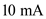

Since the transistors  and
and  are matched,
are matched,

Therefore, the ratio of .
Refer to Figure 11.17 in the text book.
(a)
Given data,
.
Consider the expression.
Substitute the values in the expression.
Therefore, the ratio of is .
Since the transistors and are matched,
Therefore, the ratio of .
For the given circuit, the value of  is,
is,
Therefore, the ratio of  .
.
Since the transistors  and
and  are matched.
are matched.
Therefore, the ratio of  is .
is .
(b)
In the quiescent state, the voltage should be zero volts is  .
.
The expression for the voltage, should be equal to voltage,  .
.
When  supplies the current, I, also supplies the same current, I, i.e. . The expression for the current,
supplies the current, I, also supplies the same current, I, i.e. . The expression for the current,  is given by
is given by
.
The maximum load current is given as.
Consider the expression.
.
Substituting the values in the expression gives,
gives,
Simplify the above expression for obtaining the value of  .
.
Since  , the value of
, the value of  is obtained by substituting the values in the expression
is obtained by substituting the values in the expression  .
.
Obtain the output voltage,  by substituting the values in the expression.
by substituting the values in the expression.
Hence, the maximum allowable output voltage is .